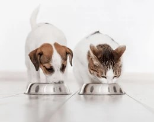
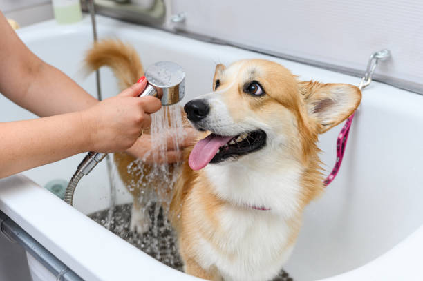
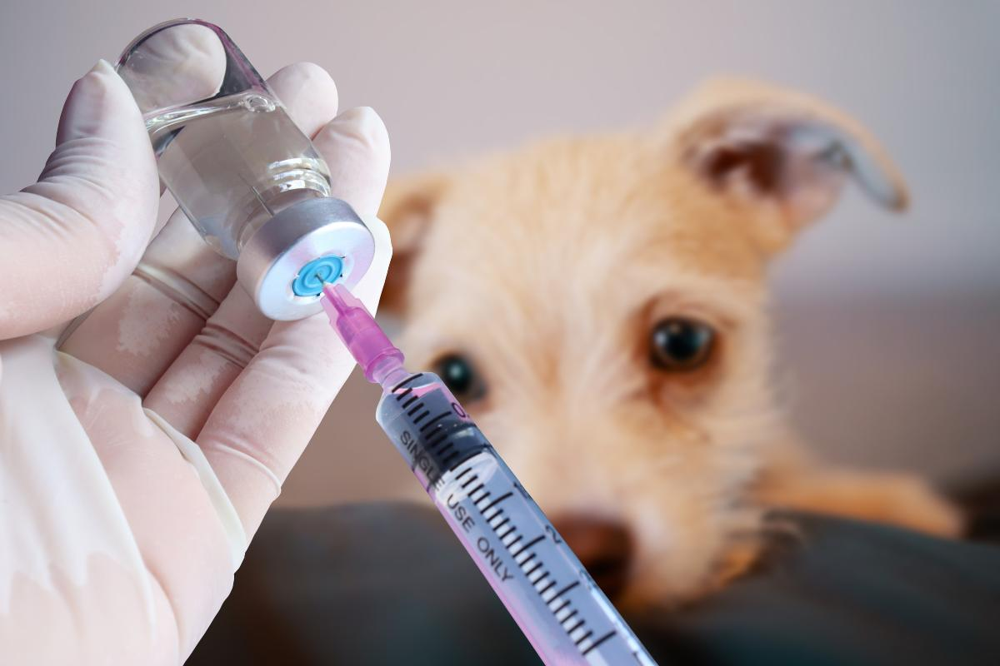

🍎Alimentación y Nutrición
Proporcionar alimento balanceado de calidad según la etapa de vida, peso y necesidades específicas de tu mascota.
La prevención es la herramienta más poderosa para garantizar una vida larga, saludable y feliz para nuestros perros y gatos. Los cuidados diarios y el seguimiento veterinario evitan complicaciones graves.

🍎Proporcionar alimento balanceado de calidad según la etapa de vida, peso y necesidades específicas de tu mascota.

🚿Baños periódicos, cepillado de pelaje, control de uñas y revisión de oídos para prevenir infecciones y parásitos externos.

💉Mantener al día el calendario sanitario protege a tu compañero frente a enfermedades virales y parasitarias graves.
Proteger a tus mascotas de los parásitos previene enfermedades zoonóticas y mantiene su salud en óptimas condiciones.
Combate parásitos intestinales mediante comprimidos o jarabes administrados periódicamente según las indicaciones del profesional.
Uso de pipetas, collares o comprimidos para prevenir pulgas, garrapatas y ácaros, especialmente en épocas de mayor calor.
Pequeñas acciones cotidianas marcan una gran diferencia en el bienestar animal:
Si detectás en tu mascota decaimiento repentino, pérdida de apetito por más de 24 horas, vómitos persistentes, dificultad para respirar o cambios drásticos de conducta, no esperes: solicitá una consulta profesional de inmediato.
Solicitar turno💡 Recordá: Un cuidado amoroso y preventivo transforma la calidad de vida de tu compañero.